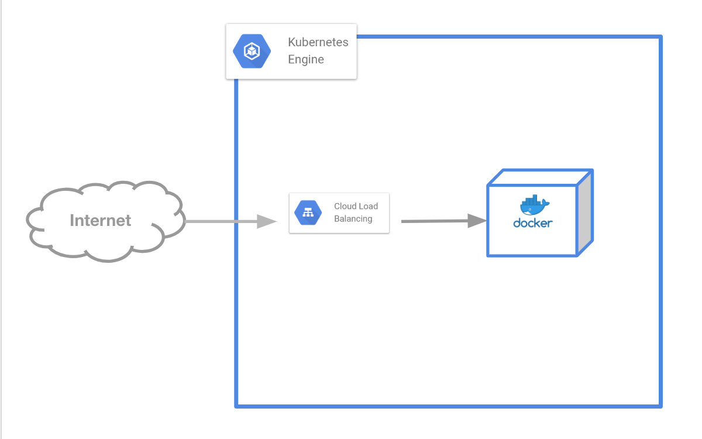

Objectsについて知る
おさらい¶

前回の章では以下の2つのコマンドを実行してNginxを公開しました。
$ kubectl run handson --image nginx --port 80 $ kubectl expose deploy handson --port=80 --target-port=80 --type=LoadBalancer
そして、以下のように複数のObjectsが立ち上がりました。
$ kubectl get all NAME READY STATUS RESTARTS AGE pod/handson-86f796b8b7-m68sr 1/1 Running 0 4m NAME TYPE CLUSTER-IP EXTERNAL-IP PORT(S) AGE service/handson LoadBalancer 10.3.243.4 34.85.67.170 80:32621/TCP 4m service/kubernetes ClusterIP 10.3.240.1 <none> 443/TCP 2h NAME DESIRED CURRENT UP-TO-DATE AVAILABLE AGE deployment.apps/handson 1 1 1 1 4m NAME DESIRED CURRENT READY AGE replicaset.apps/handson-86f796b8b7 1 1 1 4m
起動されているObjectsを知る¶
立ち上げたObjectsについて学んでみましょう。
4つのObjectsが実際に立ち上がっています。それぞれ何をしているか簡単に説明します
- Pod
- Dockerコンテナの管理
- ReplicaSet
- Podを設定された台数分維持
- Deployment
- ReplicaSetのバージョニング
- Service
- LoadBalancerの管理
Pod¶
$ kubectl get pod NAME READY STATUS RESTARTS AGE handson-86f796b8b7-m68sr 1/1 Running 0 1h
PodはKubernetes上で動かすコンテナです。
Kubernetesはコンテナを動かすためのツールである通り、Pod(コンテナ)を起点に様々なObjectsが存在します。
Podは1つ以上のコンテナで構成され、Pod単位でスケールします。
また、Pod単位でIPを持ち、インターネットへの通信はNodeのGlobal IP へ変換されます。
ReplicaSet¶
$ kubectl get replicaset NAME DESIRED CURRENT READY AGE handson-86f796b8b7 1 1 1 1h
ReplicaSetはPodを指定された台数分のコンテナを維持するための仕組みです。
試しにPodを削除して、復帰するか確認してみましょう。
Podを削除し、新しいPodが立ち上がるかためしてみましょう
$ kubectl get pod NAME READY STATUS RESTARTS AGE handson-86f796b8b7-m68sr 1/1 Running 0 2h $ kubectl delete pod handson-86f796b8b7-m68sr pod "handson-86f796b8b7-m68sr" deleted $ kubectl get pod NAME READY STATUS RESTARTS AGE handson-86f796b8b7-9dw95 1/1 Running 0 14s
ReplicaSetはPodの台数も管理します。
新しく "handson-2" という名前でnginxコンテナを3台立ててみましょう
まずは現在"handson"のObjectsしかないことを確認します
$ kubectl get all NAME READY STATUS RESTARTS AGE pod/handson-86f796b8b7-9dw95 1/1 Running 0 14m NAME TYPE CLUSTER-IP EXTERNAL-IP PORT(S) AGE service/handson LoadBalancer 10.3.243.4 34.85.67.170 80:32621/TCP 2h service/kubernetes ClusterIP 10.3.240.1 <none> 443/TCP 4h NAME DESIRED CURRENT UP-TO-DATE AVAILABLE AGE deployment.apps/handson 1 1 1 1 2h NAME DESIRED CURRENT READY AGE replicaset.apps/handson-86f796b8b7 1 1 1 2h
次に、新しく "handson-2" という名前でnginxコンテナを3台立ち上げます。
$ kubectl run handson-2 --image=nginx --replicas=3 deployment.apps/handson-2 created
"handson-2"のObjects郡が立ち上がったか確認しましょう。
$ kubectl get all NAME READY STATUS RESTARTS AGE pod/handson-2-55fcc96bc8-d6vgq 1/1 Running 0 6s pod/handson-2-55fcc96bc8-gjfdq 1/1 Running 0 6s pod/handson-2-55fcc96bc8-hlh5z 1/1 Running 0 6s pod/handson-86f796b8b7-9dw95 1/1 Running 0 15m NAME TYPE CLUSTER-IP EXTERNAL-IP PORT(S) AGE service/handson LoadBalancer 10.3.243.4 34.85.67.170 80:32621/TCP 2h service/kubernetes ClusterIP 10.3.240.1 <none> 443/TCP 4h NAME DESIRED CURRENT UP-TO-DATE AVAILABLE AGE deployment.apps/handson 1 1 1 1 2h deployment.apps/handson-2 3 3 3 3 6s NAME DESIRED CURRENT READY AGE replicaset.apps/handson-2-55fcc96bc8 3 3 3 6s replicaset.apps/handson-86f796b8b7 1 1 1 2h
新しく "handson-2" というObjects郡が作成されました。
情報が多いと感じる場合は -l オプションで"handson-2"だけフィルタして表示することも可能です。
$ kubectl get all -l run=handson-2 NAME READY STATUS RESTARTS AGE pod/handson-2-55fcc96bc8-d6vgq 1/1 Running 0 4m pod/handson-2-55fcc96bc8-gjfdq 1/1 Running 0 4m pod/handson-2-55fcc96bc8-hlh5z 1/1 Running 0 4m NAME DESIRED CURRENT UP-TO-DATE AVAILABLE AGE deployment.apps/handson-2 3 3 3 3 4m NAME DESIRED CURRENT READY AGE replicaset.apps/handson-2-55fcc96bc8 3 3 3 4m
Podを1台削除して、3台の状態が維持されるか確認してみましょう。
$ kubectl delete pod handson-2-55fcc96bc8-d6vgq pod "handson-2-55fcc96bc8-d6vgq" deleted $ kubectl get all -l run=handson-2 NAME READY STATUS RESTARTS AGE pod/handson-2-55fcc96bc8-fn6gm 1/1 Running 0 17s pod/handson-2-55fcc96bc8-gjfdq 1/1 Running 0 6m pod/handson-2-55fcc96bc8-hlh5z 1/1 Running 0 6m NAME DESIRED CURRENT UP-TO-DATE AVAILABLE AGE deployment.apps/handson-2 3 3 3 3 6m NAME DESIRED CURRENT READY AGE replicaset.apps/handson-2-55fcc96bc8 3 3 3 6m
最後に、"handson-2"のObjects郡を削除します。
$ kubectl delete deploy/handson-2 deployment.extensions "handson-2" deleted $ kubectl get all -l run=handson-2 No resources found.
Deployment¶
$ kubectl get deployment NAME DESIRED CURRENT UP-TO-DATE AVAILABLE AGE handson 1 1 1 1 2h
DeploymentはReplicaSetの世代管理を行います。
ReplicaSetがPodを管理するのに対し、DeploymentはReplicaSetの管理を行います。
Deploymentにはローリングアップデート・ロールバックの機能が備わっており、運用に非常に役立ちます。
kubectl run を実行するとDeployment・Replica Set・Podの3つのObjectsを立ち上げて協調して動作させます。
コンテナの世代管理¶
Podはコンテナ、ReplicaSetはPodの管理、DeploymentはReplicaSetの世代管理、、、と言ってもすぐには理解しづらいと思います。
なので、実際にこのObjectsがどう動くのか見てみましょう。
「 nginx:1.14 のDockerイメージを起動後、 nginx:1.15 へアップデート」を目標にしてみます。
nginx:1.14の起動¶
"handson-3" という名前でnginxの1.14のバージョンを立ち上げてみましょう。
$ kubectl run handson-3 --image=nginx:1.14 deployment.apps/handson-3 created $ kubectl get all -l run=handson-3 NAME READY STATUS RESTARTS AGE pod/handson-3-85dfb7fd88-wr58c 1/1 Running 0 3m NAME DESIRED CURRENT UP-TO-DATE AVAILABLE AGE deployment.apps/handson-3 1 1 1 1 3m NAME DESIRED CURRENT READY AGE replicaset.apps/handson-3-85dfb7fd88 1 1 1 3m
まず、nginxの1.14イメージが立ち上がっているかPodの詳細情報を確認します。
Podの詳細情報を確認するには kubectl describe pod <POD名> で確認することができます。
$ kubectl describe pod handson-3-85dfb7fd88-wr58c Name: handson-3-85dfb7fd88-wr58c Namespace: default Priority: 0 PriorityClassName: <none> Node: gke-standard-cluster-1-default-pool-1688f5b9-ssc0/10.146.0.3 Start Time: Sat, 06 Apr 2019 19:16:51 +0900 Labels: pod-template-hash=4189639844 run=handson-3 Annotations: kubernetes.io/limit-ranger: LimitRanger plugin set: cpu request for container handson-3 Status: Running IP: 10.0.0.14 Controlled By: ReplicaSet/handson-3-85dfb7fd88 Containers: handson-3: Container ID: docker://d7976c0aea18735d1d1e407832c45a3f24f905f6deee7358ece8a0aebf1a0678 Image: nginx:1.14 Image ID: docker-pullable://nginx@sha256:f7988fb6c02e0ce69257d9bd9cf37ae20a60f1df7563c3a2a6abe24160306b8d Port: <none> Host Port: <none> State: Running Started: Sat, 06 Apr 2019 19:16:59 +0900 Ready: True Restart Count: 0 Requests: cpu: 100m Environment: <none> Mounts: /var/run/secrets/kubernetes.io/serviceaccount from default-token-zt5ql (ro) Conditions: Type Status Initialized True Ready True ContainersReady True PodScheduled True Volumes: default-token-zt5ql: Type: Secret (a volume populated by a Secret) SecretName: default-token-zt5ql Optional: false QoS Class: Burstable Node-Selectors: <none> Tolerations: node.kubernetes.io/not-ready:NoExecute for 300s node.ubernetes.io/unreachable:NoExecute for 300s Events: Type Reason Age From Message ---- ------ ---- ---- ------- Normal Scheduled 5m48s default-scheduler Successfully assigned default/handson-3-85dfb7fd88-wr58c to gke-standard-cluster-1-default-pool-1688f5b9-ssc0 Normal Pulling 5m47s kubelet, gke-standard-cluster-1-default-pool-1688f5b9-ssc0 pulling image "nginx:1.14" Normal Pulled 5m41s kubelet, gke-standard-cluster-1-default-pool-1688f5b9-ssc0 Successfully pulled image "nginx:1.14" Normal Created 5m40s kubelet, gke-standard-cluster-1-default-pool-1688f5b9-ssc0 Created container Normal Started 5m40s kubelet, gke-standard-cluster-1-default-pool-1688f5b9-ssc0 Started container
長いのでgrepでDockerイメージの情報だけ確認し、nginxの1.14が立ち上がっていることを確認しましょう。
$ kubectl describe pod handson-3-85dfb788-wr58c | grep "Image:" Image: nginx:1.14
Podをnginx:1.15へ更新する¶
Dockerイメージを更新するには kubectl set image を使用します。
"handson-3" を "nginx:1.15" へ変更しましょう。
$ kubectl set image deployment handson-3 handson-3=nginx:1.15 deployment.extensions/handson-3 image updated
新しいPodが立ち上がっていることを確認し、そのPodが "nginx:1.15" になっていることを確認します。
$ kubectl get pods -l run=handson-3 NAME READY STATUS RESTARTS AGE handson-3-fcb7464b5-kfslq 1/1 Running 0 1m $ kubectl describe pod handson-3-fcb7464b5-kfslq | grep "Image:" Image: nginx:1.15
ReplicaSetの確認¶
「ReplicaSetがPodの管理をしている」ので、ReplicaSetがPodの現在の状態を持っています。
まずはReplicaSetが nginx:1.14 と nginx:1.15 の2つの世代が存在するか確かめてみましょう。
$ kubectl get replicaset -l run=handson-3 NAME DESIRED CURRENT READY AGE handson-3-85dfb7fd88 0 0 0 32m handson-3-fcb7464b5 1 1 1 19m
まずは最初に立ち上げた"AGE"(起動時間)が古いもののDockerイメージが nginx:1.14 の情報を持っているか確認してみましょう
$ kubectl describe replicaset handson-3-85dfb7fd88 | grep "Image:" Image: nginx:1.14
新しく起動したものが nginx:1.15 になっているか確認します。
$ kubectl describe replicaset handson-3-fcb7464b5 | grep "Image:" Image: nginx:1.15
Podを更新に追従して2つのReplicaSetが存在することが確認できました。
Deploymentの確認¶
「DeploymentがReplicaSetの世代管理をしている」ので、ReplicaSetの更新履歴をDeploymentは管理することができます。
現在のDeploymentからReplicaSetの履歴を確認してみましょう。
$ kubectl rollout history deployment handson-3 deployment.extensions/handson-3 REVISION CHANGE-CAUSE 1 <none> 2 <none>
"REVISION"が2つ表示されました。
特定のREVISIONがどのような情報を持っているかは --revision オプションを使って詳細を確認できます。
$ kubectl rollout history deployment handson-3 --revision=1 deployment.extensions/handson-3 with revision #1 Pod Template: Labels: pod-template-hash=4189639844 run=handson-3 Containers: handson-3: Image: nginx:1.14 Port: <none> Host Port: <none> Environment: <none> Mounts: <none> Volumes: <none> $ kubectl rollout history deployment handson-3 --revision=2 deployment.extensions/handson-3 with revision #2 Pod Template: Labels: pod-template-hash=976302061 run=handson-3 Containers: handson-3: Image: nginx:1.15 Port: <none> Host Port: <none> Environment: <none> Mounts: <none> Volumes: <none>
ロールバックする¶
アプリケーションはロールアウトだけでなくロールバックも重要です。
実際に nginx:1.15 から nginx:1.14 へロールバックを試してみましょう。
kubectl rollout undo で1個前のバージョンを復元することが可能です。
$ kubectl rollout undo deployment handson-3 deployment.extensions/handson-3 rolled back $ kubectl rollout history deployment handson-3 deployment.extensions/handson-3 REVISION CHANGE-CAUSE 2 <none> 3 <none> $ kubectl rollout history deployment handson-3 --revision=3 deployment.extensions/handson-3 with revision #3 Pod Template: Labels: pod-template-hash=4189639844 run=handson-3 Containers: handson-3: Image: nginx:1.14 Port: <none> Host Port: <none> Environment: <none> Mounts: <none> Volumes: <none>
お片付け¶
$ kubectl delete deploy handson-3
Service¶
$ kubectl get service NAME TYPE CLUSTER-IP EXTERNAL-IP PORT(S) AGE handson LoadBalancer 10.3.243.4 34.85.67.170 80:32621/TCP 1h
"Service" ObjectsはPod郡に対して外部からのエンドポイントを提供します。
今回であれば nginx を起動するPodを外部へ公開するために ロードバランサ を起動しました。
クラスター内の通信だけで完結するのであればロードバランサに大げさなものではなく、クラスター内専用のIPを作成することも可能です。
他にもServiceの種類は存在するので用途に合わせて選択すると良いでしょう。